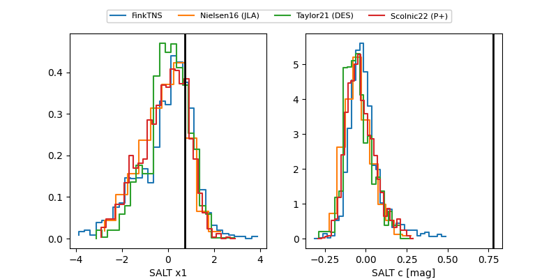

FINK: ZTF25ablxbpl
Lasair: ZTF25ablxbpl
ALeRCE: ZTF25ablxbpl
ZTF25ablxbpl (ztf,fink)
equatorial (ra, dec) = (331.1057,+44.38735)
galactic (l, b) = (94.1320,-8.94630)

last atlaso=19.73, ztfr=19.87
1 atlaso, 6 ztfr detections